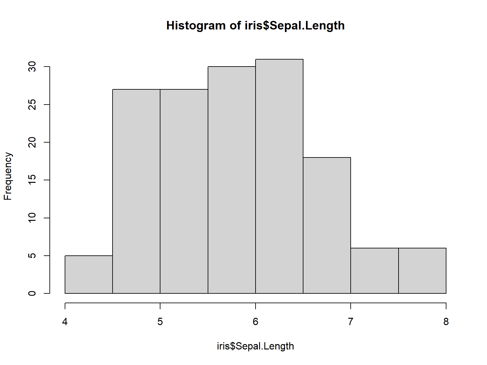
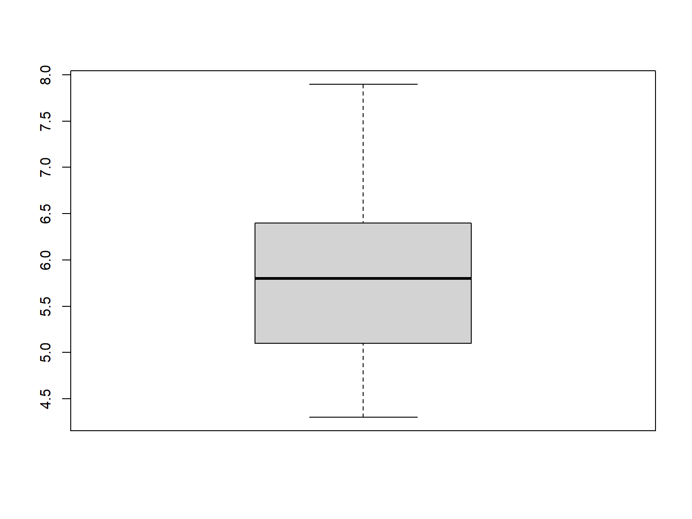
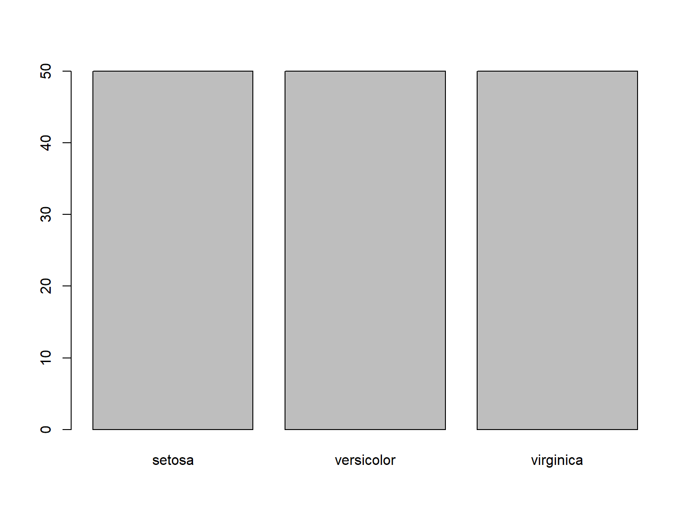
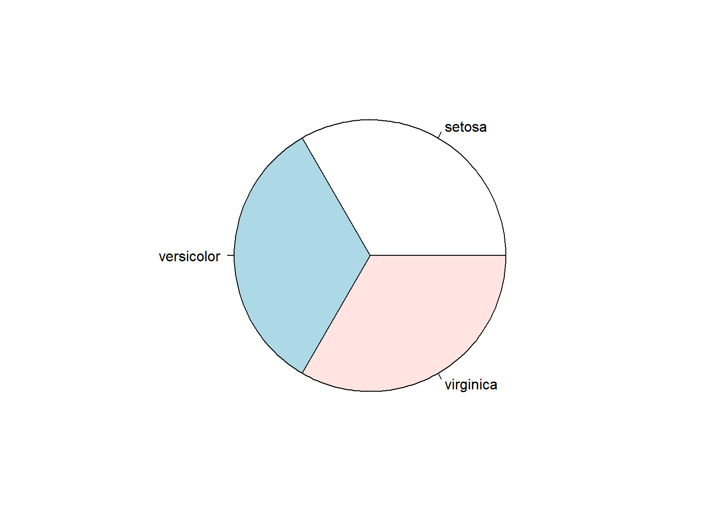
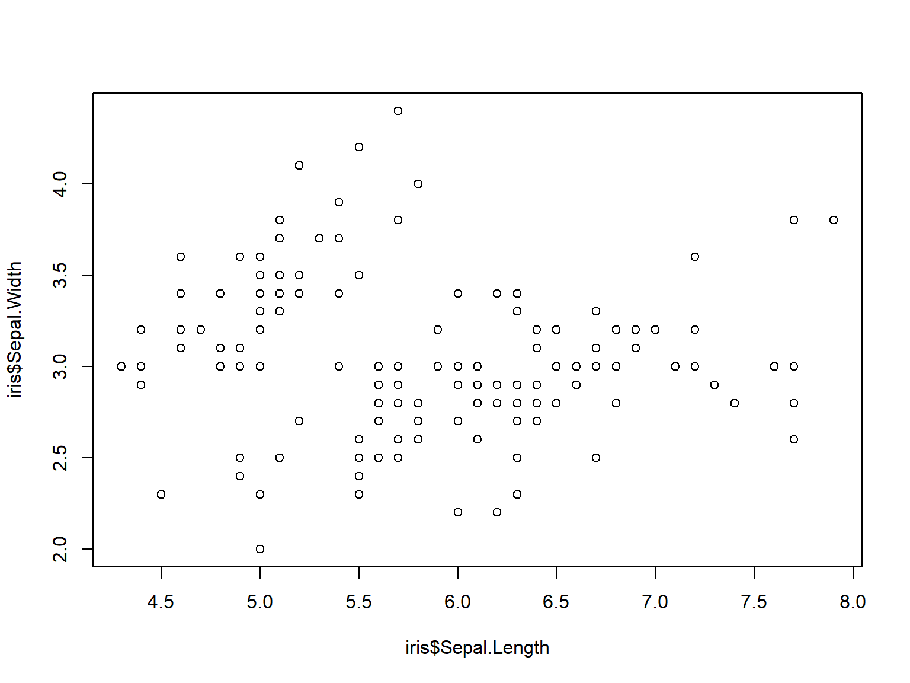
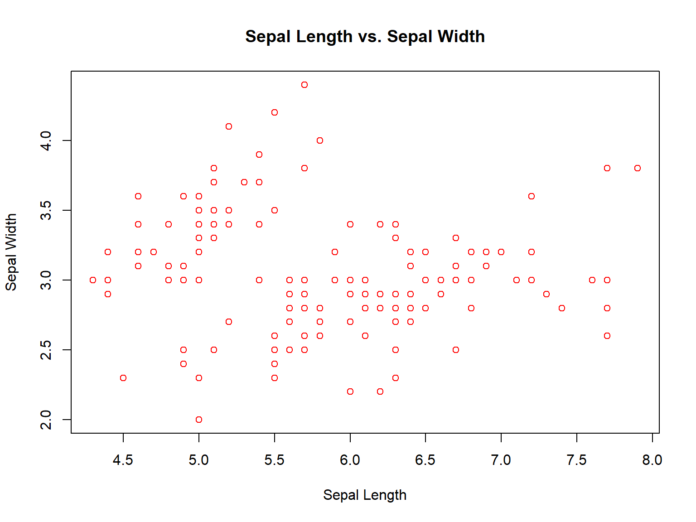

A <- 2 1 Basics of R
1.1 Introduction
A # Print A[1] 2A = 2
A[1] 2B <- "Halo Semua"
B[1] "Halo Semua"a<-10 # Space is not sensitive but lettercase is sensitive.
A[1] 2a[1] 10# Arithmetic operation
x <- 5
y <- 3
x + y [1] 8x - y [1] 2x * y [1] 15x / y [1] 1.666667# Logic operation
a <- TRUE
b <- FALSE
a & b [1] FALSEa | b [1] TRUE!a [1] FALSEx <- 5
y <- 3
x > y [1] TRUEx < y [1] FALSEx == y [1] FALSEx >= y [1] TRUEx <= y [1] FALSE1.2 Types of Objects in R
1.2.1 Vector
a1 <- c(2,4,7,3) # Numeric vector
a2 <- c("one","two","three") # Character vector
a3 <- c(TRUE,TRUE,TRUE,FALSE,TRUE,FALSE) # Logical vectora1[1] 2 4 7 3a3[4] [1] FALSEa2[c(1,3)] [1] "one" "three"a1[-1] [1] 4 7 3a1[2:4] [1] 4 7 3a <- c(1, 2, 3)
b <- c(4, 5, 6)
c <- c(a, b)
c [1] 1 2 3 4 5 6c[1:3] [1] 1 2 3d <- a + b
d [1] 5 7 9a4 <- 1:12
b1 <- matrix(a4,3,4)
b2 <- matrix(a4,3,4,byrow=TRUE)
b3 <- matrix(1:14,4,4)b1 [,1] [,2] [,3] [,4]
[1,] 1 4 7 10
[2,] 2 5 8 11
[3,] 3 6 9 12b2 [,1] [,2] [,3] [,4]
[1,] 1 2 3 4
[2,] 5 6 7 8
[3,] 9 10 11 12b3 [,1] [,2] [,3] [,4]
[1,] 1 5 9 13
[2,] 2 6 10 14
[3,] 3 7 11 1
[4,] 4 8 12 2b2[2,3] [1] 7b2[1:2,] [,1] [,2] [,3] [,4]
[1,] 1 2 3 4
[2,] 5 6 7 8b2[c(1,3),-2] [,1] [,2] [,3]
[1,] 1 3 4
[2,] 9 11 12dim(b2) [1] 3 4m1 <- matrix(c(1, 2, 3, 4, 5, 6), nrow = 2, ncol = 3)
m2 <- matrix(c(7, 8, 9, 10, 11, 12), nrow = 2, ncol = 3)m3 <- m1 + m2
m3 [,1] [,2] [,3]
[1,] 8 12 16
[2,] 10 14 18m4 <- m1 %*% t(m2)
m4 [,1] [,2]
[1,] 89 98
[2,] 116 1281.2.2 Factor
a5 <- c("A","B","AB","O")
d1 <- factor(a5)
levels(d1)[1] "A" "AB" "B" "O" levels(d1) <- c("Darah A","Darah AB","Darah B","Darah O")
d1[1] Darah A Darah B Darah AB Darah O
Levels: Darah A Darah AB Darah B Darah Oa6 <- c("SMA","SD","SMP","SMA","SMA","SMA","SMA","SMA","SMA","SMA","SMA","SMA","SMA")
d5 <- factor(a6, levels=c("SD","SMP","SMA")) # Skala pengukuran ordinal
levels(d5) [1] "SD" "SMP" "SMA"d5 [1] SMA SD SMP SMA SMA SMA SMA SMA SMA SMA SMA SMA SMA
Levels: SD SMP SMA1.2.3 List
a1; b2; d1[1] 2 4 7 3 [,1] [,2] [,3] [,4]
[1,] 1 2 3 4
[2,] 5 6 7 8
[3,] 9 10 11 12[1] Darah A Darah B Darah AB Darah O
Levels: Darah A Darah AB Darah B Darah Oe1 <- list(a1,b2,d1)
e2 <- list(vect=a1,mat=b2,fac=d1)
e1[[1]]
[1] 2 4 7 3
[[2]]
[,1] [,2] [,3] [,4]
[1,] 1 2 3 4
[2,] 5 6 7 8
[3,] 9 10 11 12
[[3]]
[1] Darah A Darah B Darah AB Darah O
Levels: Darah A Darah AB Darah B Darah Oe2$vect
[1] 2 4 7 3
$mat
[,1] [,2] [,3] [,4]
[1,] 1 2 3 4
[2,] 5 6 7 8
[3,] 9 10 11 12
$fac
[1] Darah A Darah B Darah AB Darah O
Levels: Darah A Darah AB Darah B Darah Oe1[[1]][2] [1] 4e2$fac [1] Darah A Darah B Darah AB Darah O
Levels: Darah A Darah AB Darah B Darah Oe2[2] $mat
[,1] [,2] [,3] [,4]
[1,] 1 2 3 4
[2,] 5 6 7 8
[3,] 9 10 11 12names(e2)[1] "vect" "mat" "fac" 1.2.4 Data Frame
Angka <- 11:15
Huruf <- factor(LETTERS[6:10])
f1 <- data.frame(Angka,Huruf)
f1 Angka Huruf
1 11 F
2 12 G
3 13 H
4 14 I
5 15 Jf1[1,2] [1] F
Levels: F G H I Jf1$Angka [1] 11 12 13 14 15f1[,"Huruf"] [1] F G H I J
Levels: F G H I Jcolnames(f1) [1] "Angka" "Huruf"str(f1)'data.frame': 5 obs. of 2 variables:
$ Angka: int 11 12 13 14 15
$ Huruf: Factor w/ 5 levels "F","G","H","I",..: 1 2 3 4 51.3 Data Frame Management
data(iris) head(iris) Sepal.Length Sepal.Width Petal.Length Petal.Width Species
1 5.1 3.5 1.4 0.2 setosa
2 4.9 3.0 1.4 0.2 setosa
3 4.7 3.2 1.3 0.2 setosa
4 4.6 3.1 1.5 0.2 setosa
5 5.0 3.6 1.4 0.2 setosa
6 5.4 3.9 1.7 0.4 setosatail(iris) Sepal.Length Sepal.Width Petal.Length Petal.Width Species
145 6.7 3.3 5.7 2.5 virginica
146 6.7 3.0 5.2 2.3 virginica
147 6.3 2.5 5.0 1.9 virginica
148 6.5 3.0 5.2 2.0 virginica
149 6.2 3.4 5.4 2.3 virginica
150 5.9 3.0 5.1 1.8 virginicastr(iris)'data.frame': 150 obs. of 5 variables:
$ Sepal.Length: num 5.1 4.9 4.7 4.6 5 5.4 4.6 5 4.4 4.9 ...
$ Sepal.Width : num 3.5 3 3.2 3.1 3.6 3.9 3.4 3.4 2.9 3.1 ...
$ Petal.Length: num 1.4 1.4 1.3 1.5 1.4 1.7 1.4 1.5 1.4 1.5 ...
$ Petal.Width : num 0.2 0.2 0.2 0.2 0.2 0.4 0.3 0.2 0.2 0.1 ...
$ Species : Factor w/ 3 levels "setosa","versicolor",..: 1 1 1 1 1 1 1 1 1 1 ...1.3.1 R Package
# install.packages("readxl") - code to install R package
library(readxl)#install.packages("dplyr")
library(dplyr)1.3.2 Data Management With dplyr
head(iris) Sepal.Length Sepal.Width Petal.Length Petal.Width Species
1 5.1 3.5 1.4 0.2 setosa
2 4.9 3.0 1.4 0.2 setosa
3 4.7 3.2 1.3 0.2 setosa
4 4.6 3.1 1.5 0.2 setosa
5 5.0 3.6 1.4 0.2 setosa
6 5.4 3.9 1.7 0.4 setosairisbaru <- mutate(iris, sepal2 = Sepal.Length + Sepal.Width)head(irisbaru) Sepal.Length Sepal.Width Petal.Length Petal.Width Species sepal2
1 5.1 3.5 1.4 0.2 setosa 8.6
2 4.9 3.0 1.4 0.2 setosa 7.9
3 4.7 3.2 1.3 0.2 setosa 7.9
4 4.6 3.1 1.5 0.2 setosa 7.7
5 5.0 3.6 1.4 0.2 setosa 8.6
6 5.4 3.9 1.7 0.4 setosa 9.3irisetosa <- filter(iris, Species=="setosa")
head(irisetosa) Sepal.Length Sepal.Width Petal.Length Petal.Width Species
1 5.1 3.5 1.4 0.2 setosa
2 4.9 3.0 1.4 0.2 setosa
3 4.7 3.2 1.3 0.2 setosa
4 4.6 3.1 1.5 0.2 setosa
5 5.0 3.6 1.4 0.2 setosa
6 5.4 3.9 1.7 0.4 setosalevels(iris$Species)[1] "setosa" "versicolor" "virginica" irisversicolor <- filter(iris, Species=="setosa"& Petal.Length==1.3)
head(irisversicolor) Sepal.Length Sepal.Width Petal.Length Petal.Width Species
1 4.7 3.2 1.3 0.2 setosa
2 5.4 3.9 1.3 0.4 setosa
3 5.5 3.5 1.3 0.2 setosa
4 4.4 3.0 1.3 0.2 setosa
5 5.0 3.5 1.3 0.3 setosa
6 4.5 2.3 1.3 0.3 setosairis3 <- select(iris, Sepal.Length, Species)
head(iris3) Sepal.Length Species
1 5.1 setosa
2 4.9 setosa
3 4.7 setosa
4 4.6 setosa
5 5.0 setosa
6 5.4 setosairis4 <- arrange(iris, Petal.Width)
head(iris4) Sepal.Length Sepal.Width Petal.Length Petal.Width Species
1 4.9 3.1 1.5 0.1 setosa
2 4.8 3.0 1.4 0.1 setosa
3 4.3 3.0 1.1 0.1 setosa
4 5.2 4.1 1.5 0.1 setosa
5 4.9 3.6 1.4 0.1 setosa
6 5.1 3.5 1.4 0.2 setosairis4 <- arrange(iris, Species, desc(Petal.Width))
head(iris4) Sepal.Length Sepal.Width Petal.Length Petal.Width Species
1 5.0 3.5 1.6 0.6 setosa
2 5.1 3.3 1.7 0.5 setosa
3 5.4 3.9 1.7 0.4 setosa
4 5.7 4.4 1.5 0.4 setosa
5 5.4 3.9 1.3 0.4 setosa
6 5.1 3.7 1.5 0.4 setosanames(iris4)[1] <- "length"
head(iris4) length Sepal.Width Petal.Length Petal.Width Species
1 5.0 3.5 1.6 0.6 setosa
2 5.1 3.3 1.7 0.5 setosa
3 5.4 3.9 1.7 0.4 setosa
4 5.7 4.4 1.5 0.4 setosa
5 5.4 3.9 1.3 0.4 setosa
6 5.1 3.7 1.5 0.4 setosahead(iris4[,c(-1,-3)]) Sepal.Width Petal.Width Species
1 3.5 0.6 setosa
2 3.3 0.5 setosa
3 3.9 0.4 setosa
4 4.4 0.4 setosa
5 3.9 0.4 setosa
6 3.7 0.4 setosairis %>% group_by(Species) %>% summarise(rata2_Sepal.Width = mean(Sepal.Width))# A tibble: 3 × 2
Species rata2_Sepal.Width
<fct> <dbl>
1 setosa 3.43
2 versicolor 2.77
3 virginica 2.971.4 Visualization
1.4.1 Histogram
hist(iris$Sepal.Length)
1.4.2 Box Plot
boxplot(iris$Sepal.Length)
1.4.3 Barplot
table(iris$Species)
setosa versicolor virginica
50 50 50 barplot(table(iris$Species))
1.4.4 Pie Chart
pie(table(iris$Species))
1.4.5 Scatter Plot
plot(iris$Sepal.Length,iris$Sepal.Width)
plot(iris$Sepal.Length, iris$Sepal.Width, main = "Sepal Length vs. Sepal Width",
xlab = "Sepal Length", ylab = "Sepal Width", col = "red")